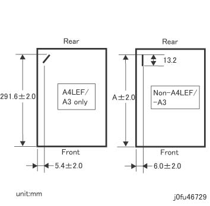

ADJ 27.6.2 单面/单个 后面 装订针 Needle 位置 调整 
目的
To 调整 装订位置 当...时 making a 单面/单个 后面 装订针.
请参阅 以下 用于 规格. (图 1)

图 1 is 输出 图 (侧面 2).

(图 1) j0fu46729
The A in 图 1 is 如下:
Supported 纸张 | Dimension (mm) | A +/- 2 (mm) |
|---|---|---|
B5 SEF (Straight at 前面 装订针: Corner 装订针 unavailable) | 182 | 176 |
8 x 10 SEF | 203.2 | 197.2 |
A4 SEF/A5 SEF | 210 | 204 |
Spanish SEF | 215 | 209 |
8.5 x 11/13/14 SEF, 5.5 x 8.5 LEF | 215.9 | 209.9 |
A4盖板 SEF | 223 | 204 |
Special A4 SEF | 226 | 220 |
9 x 11 SEF | 228.6 | 222.6 |
8 x 10 LEF | 254 | 248 |
B5 LEF, B4 SEF | 257 | 251 |
Executive LEF | 266.7 | 261 |
16K (FBTW) LEF, 8K (FBTW) SEF | 267 | 261 |
16K (FBCN/FBHK) LEF, 8K (FBCN/FBHK) SEF | 270 | 264 |
8.5/9 x 11 LEF, 11 x 15/17 SEF | 279.4 | 273.4 |
A4/A4 盖板 LEF, A3 SEF | 297 | 291 |
Custom 尺寸 | W | W -6 |
调整
[后面 Straight: 除了 A4 LEF/A3 SEF]
As 此 调整 is an 调整 in the 前面 和 后面 directions, 执行 the 引线/导向 位置 调整 in [ADJ 27.6.1 装订针 歪斜/引线/导向 位置 调整 of ADJ 27.6.1Dual 装订针] to 调整 装订针 in the 左侧 和 右侧 directions.
此 调整 变更 the Stapler Head 停止 位置 by changing the NVM 数据.
Make a 复印 or 打印 和/与 以下 模式:
[Revoria 按下 E1136G, ApeosPro C810G, Apeos C8180G, Apeos 7580G, Revoria 按下 EC1100, Revoria 按下 SC180G]
纸张尺寸: 任何 尺寸 除了 A4 LEF/A3 SEF
号码 of 设置: 3
装订针: 后面 Straight
[Revoria 按下 PC1120]
纸张尺寸: 任何 尺寸 除了 A4 LEF/A3 SEF
编号 of Copies: 3
装订针: 1 装订针 顶部 右侧 (后面 Straight)
The NVM 用于 the 调整 将 不同 用于 sizes 和/与 纸张 宽度 longer 比 250 mm 和 纸张 宽度 250 mm或 shorter.
确认 the 边缘 of 装订针 is A +/-2.0 mm 从前面 边缘 of 纸张. (图 1)
如果 值 不是 as 指定的, 调整 it using 以下 NVM:
Sizes 和/与 纸张 宽度 longer 比 250 mm:
后面 装订位置 调整 (其他 比 A4 LEF 和 A3 SEF) (NVM 763-320)
Sizes 和/与 纸张 宽度 250 mm或 shorter:
后面 装订位置 调整 (其他 比 A4 LEF 和 A3 SEF) 用于 Sizes 和/与 纸张 宽度 250 mm或 Shorter (NVM 763-321)
Increasing the 数据 移动 the 装订位置 towards the 后面.
Changing the 数据 by 1 变更 the Stapler Head 停止 位置 by 0.096 mm.
Repeat Steps 1 to 3 直到 指定值 is obtained.
[后面 corner: A4 LEF/A3 SEF]
As the Stapler Head 调整为 停止 at the 位置 在哪里 the rail is curbed, 此 调整 变更 the 装订位置 沿着 the rail positioning 同时 by changing the NVM 数据. Hence, it is 好 enough to make 任一 调整 to obtain 指定值.
Make a 复印 or 打印 和/与 以下 模式:
[Revoria 按下 E1136G, ApeosPro C810G, Apeos C8180G, Apeos 7580G, Revoria 按下 EC1100, Revoria 按下 SC180G]
纸张尺寸: A4 LEF or A3 SEF
号码 of 设置: 3
装订针: 后面 Corner
[Revoria 按下 PC1120]
纸张尺寸: A4 LEF/A3 SEF
编号 of Copies: 3
装订针: 1 装订针 顶部 右侧 (后面 Corner)
确认 the 边缘 of 装订针 (后面 侧面) is 291.6 +/-2.0 mm 从前面 边缘 of 纸张. (图 1)
如果 值 不是 as 指定的, 调整 it using 以下 NVM:
后面 装订位置 调整 (A4 LEF 和 A3 SEF) (NVM 763-319)
Increasing the 数据 移动 the 装订位置 towards the 后面.
Changing the 数据 by 1 变更 the Stapler Head 停止 位置 by 0.096 mm.
Repeat Steps 1 to 3 直到 指定值 is obtained.